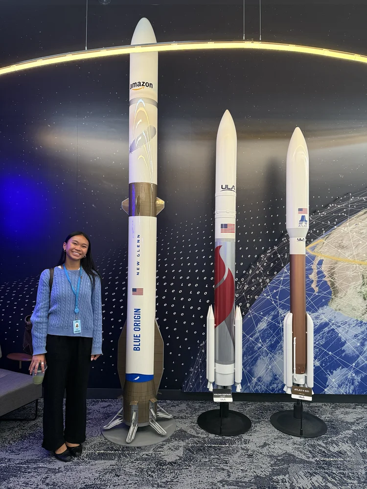
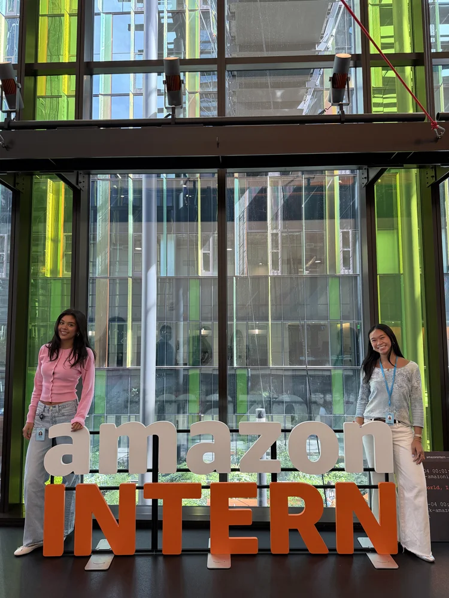

Solutions Architect Intern, Amazon Leo (Project Kuiper)
APIs, Satellite Communications Framework · Seattle, Washington
I am currently at Amazon Leo (formerly Project Kuiper) as a Solutions Architect Intern, where I'm working backwards from customer needs to build a customer-facing platform that streamlines API integration, featuring live API calls and an embedded AI agent. I'm designing this solution hands-on with AWS technologies (Amazon Q Business, s3, Lambda, API Gateway, IAM) and MCP. I'm also sitting in on customer-facing B2B sales and technical calls, acting as a technical advocate for enterprise satellite communications customers and learning how to translate their requirements into architecture decisions.
On-site at Amazon

